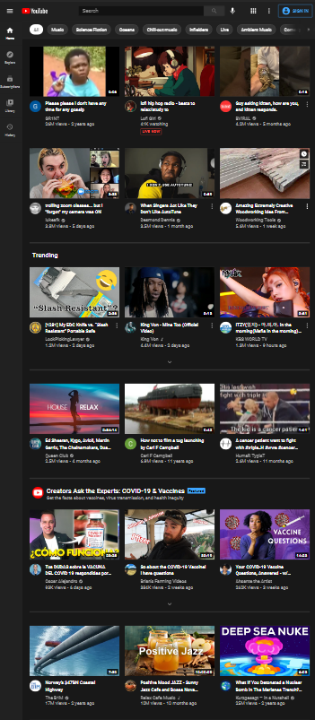
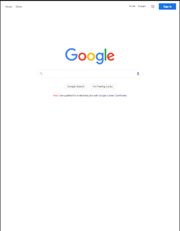

Visual Hierarchy
Apple
Apple.com
While it's not immediately apparent from the screenshot, Apple's website has a very good implementation of hierarchy. As you scroll, you get the main products they're trying to push, from their new iPad, to their "new" purple iPhone, and eventually you get towards their less important items which are separated into columns towards the bottom.
PARC: Repetition
YouTube
YouTube.com
YouTube is a very well thought out project. It's use of repetition is excellent. It works hand in hand with their algorithm, which is designed to keep users on their site as long as possible. Because of this, the UI is designed to show in an attractive way the next "recommended" video for you to watch. It was all very intelligently engineered to end up in this way.
White Space & Clean Design
Google.com
Google is a pretty obvious example for this design principle. It knows what you're there to do and doesn't deviate from that fact. It's a very simplistic design which allows for easy access to what you're there to do. No ads to clutter it or, really, any clutter at all.